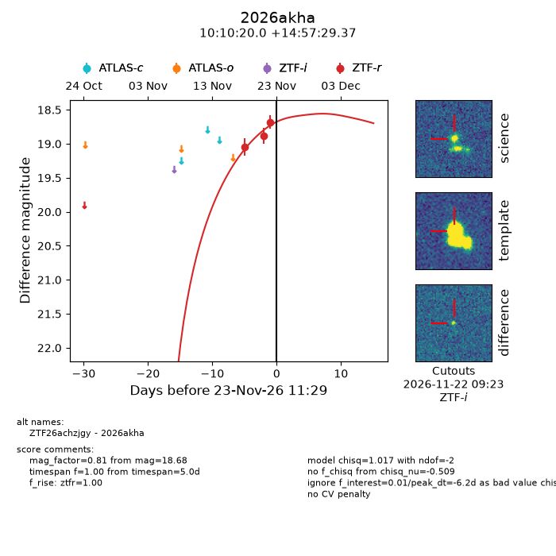
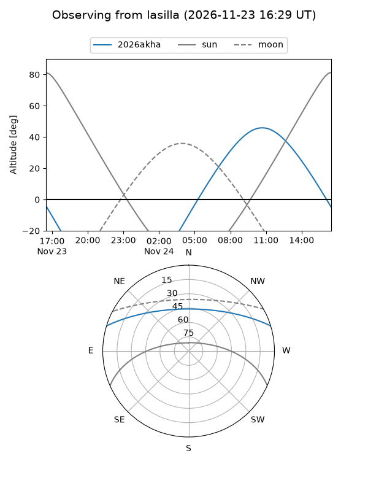
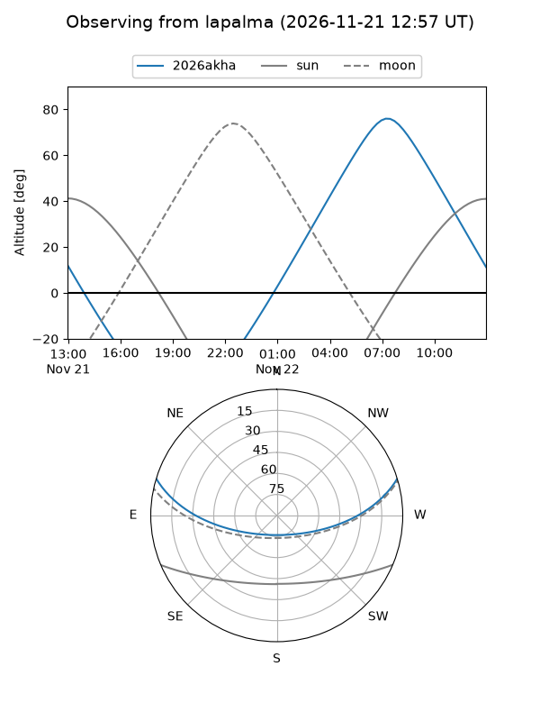
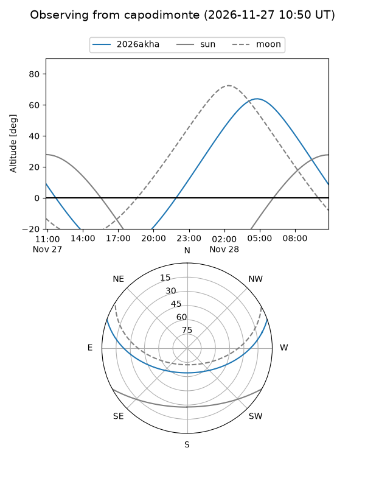
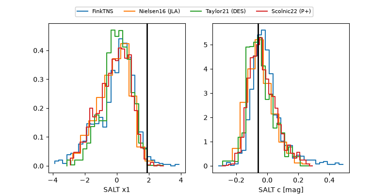

2026akha
Target 2026akha at 2026-11-23 11:31
Aliases and brokers:
FINK-ZTF: ztf.fink-portal.org/ZTF26achzjgy
Lasair-ZTF: lasair-ztf.lsst.ac.uk/objects/ZTF26achzjgy
ALeRCE-ZTF: alerce.online/object/ZTF26achzjgy
YSE-PZ: ziggy.ucolick.org/yse/transient_detail/2026akha
TNS name: wis-tns.org/object/2026akha
Direct TNS query: direct search
alt names
ZTF26achzjgy (ztf,fink_ztf)
2026akha (tns,yse)
Coordinates:
equatorial (ra, dec) = 152.5832,+14.95816
equatorial (HMS+DMS) = 10:10:19.98,+14:57:29.37
galactic (l, b) = (222.5982,+50.68656)
Flags:
peak dt: -6.2
Photometry:
last ztfr=18.68
3 ztfr detections
Lightcurve

Visibility



Additional plots
